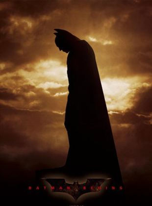

O Dr. Otto Octavius é transformado em Doutor Octopus quando uma falha em uma experiência de fusão nuclear resulta em uma explosão que mata sua esposa. Ele culpa o Homem-Aranha pelo acidente e deseja vingança. Enquanto isso, o alter ego do herói, Peter Parker, perde seus poderes. Para complicar as coisas, o seu melhor amigo odeia o Homem-Aranha e sua amada fica noiva.
Batman Begins

O jovem Bruce Wayne viaja para o Oriente e recebe treinamento em artes marciais do mestre Henri Ducard, um membro da misteriosa Liga das Sombras. Quando Ducard revela que a verdadeira proposta da Liga é a destruição completa de Gotham City, Wayne retorna à sua cidade natal com o intuito de livrá-la de criminosos e assassinos. Bruce assume a persona de Batman, o Cavaleiro das Trevas, e conta com a ajuda do mordomo Alfred e do expert Lucius Fox.
X-Men: Primeira Classe
No início dos anos 1960, durante o auge da Guerra Fria, um mutante chamado Charles Xavier conhece um mutante chamado Erik Lehnsherr. Apesar de suas origens muito diferentes - Charles cresceu em uma família rica enquanto Erik perdeu seus pais em Auschwitz -, os dois se tornam grandes amigos. Enquanto o mundo oscila à beira de uma guerra nuclear, Charles e Erik unem forças com outros mutantes para salvar a humanidade. No entanto, um acontecimento separa os dois amigos.